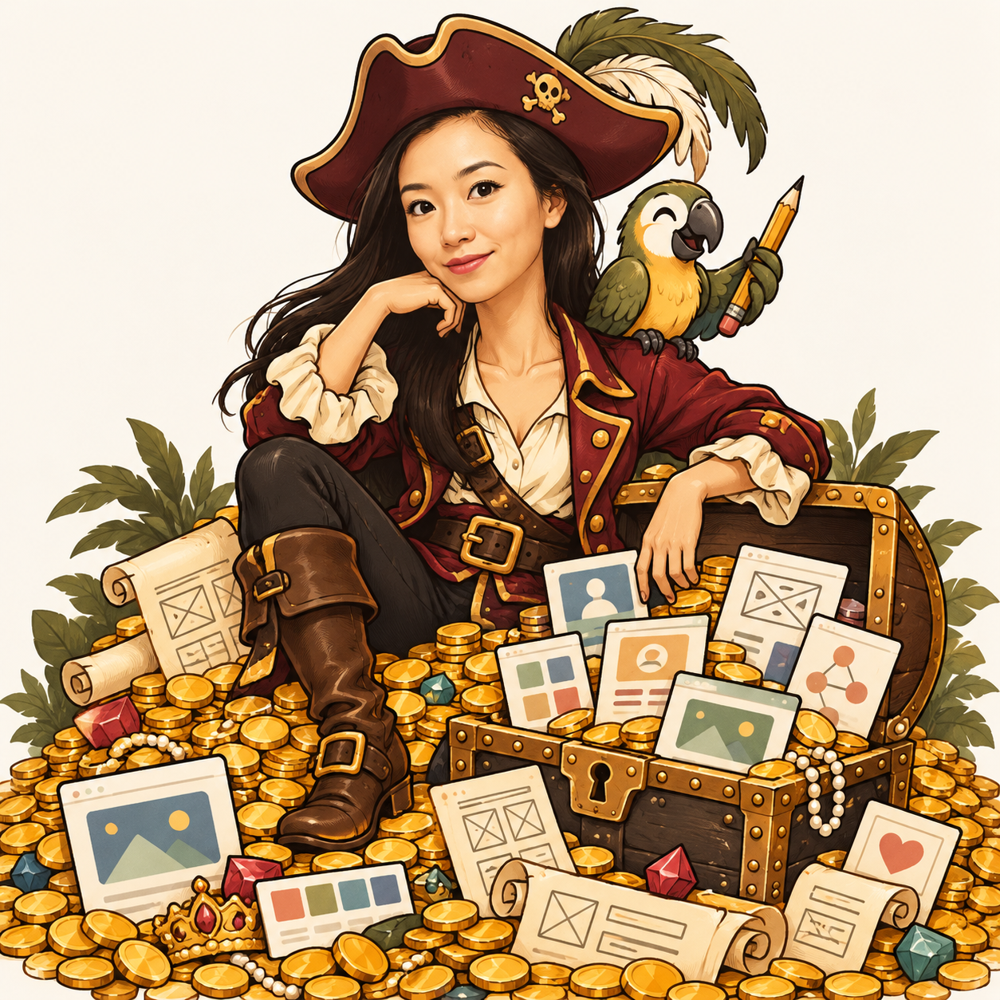

A field guide to the work
Sindy’s Treasure Trove
Find the project. Remember the story. A compact index of products, patterns, and creative detours.
Tap a row to open ·
No matches. Try a client name or a broader skill.

Find the project. Remember the story. A compact index of products, patterns, and creative detours.
No matches. Try a client name or a broader skill.